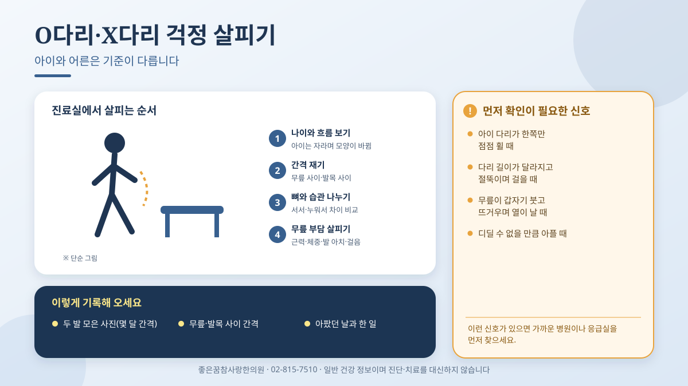

이종호 한의사 감수좋은꿈참사랑한의원 대표원장 (한의사 면허번호 19769)발행 2026-11-26 · 수정 2026-11-26
이 글의 차례
아이 사진을 정리하다가 문득 다리가 눈에 들어옵니다. 두 발을 모으고 서 있는데 무릎 사이가 동그랗게 벌어져 있습니다. 반대로 거울 앞의 내 다리는 무릎이 먼저 닿고 발목 사이가 벌어집니다. 이대로 괜찮은 걸까, 교정을 해야 하는 걸까 마음이 쓰이기 시작합니다.
진료실에서 다리 모양에 대한 질문은 크게 두 갈래로 듣습니다. 하나는 아이의 다리가 휘어 보여 걱정하시는 부모님, 다른 하나는 무릎이 아프기 시작하면서 내 다리 모양이 원인인지 궁금해하시는 어른입니다. 같은 O다리, X다리라도 나이에 따라 의미가 꽤 다릅니다.
아이의 다리는 자라면서 모양이 바뀝니다. 걸음마 시기에는 O다리였다가, 몇 년 뒤에는 X다리가 되었다가, 다시 곧게 펴지는 흐름이 흔합니다. 그래서 아이의 다리 모양은 한 장면보다 시간에 따른 변화를 보는 것이 중요합니다.
어른의 다리 모양은 이미 자라기를 마친 뼈의 모양과, 그 위에 쌓인 근육과 자세 습관이 함께 만든 결과입니다. 뼈의 모양을 생활 습관으로 바꾸기는 어렵지만, 무릎에 실리는 부담을 나누고 근육의 균형을 맞추는 데에는 할 수 있는 일이 많습니다.
O다리와 X다리는 무엇을 말하나요
O다리는 두 발목을 붙이고 섰을 때 무릎 사이가 벌어지는 모양입니다. 다리 전체가 알파벳 O처럼 바깥으로 휘어 보여서 붙은 이름이고, 정식으로는 내반슬이라고 부릅니다. 무릎 안쪽에 체중이 더 많이 실리는 경향이 있습니다.
X다리는 두 무릎을 붙이고 섰을 때 발목 사이가 벌어지는 모양입니다. 무릎이 안쪽으로 모여 X자처럼 보이고, 정식으로는 외반슬이라고 부릅니다. 무릎 바깥쪽에 체중이 더 실리거나, 무릎뼈가 바깥으로 끌리는 힘이 커지기도 합니다.
어느 정도는 누구나 조금씩 휘어 있고, 완전히 곧은 다리는 오히려 드뭅니다. 다리 모양 자체보다 그 모양이 점점 심해지는지, 한쪽만 다른지, 통증이나 걸음의 불편이 함께 있는지가 더 중요한 기준입니다.
아이의 다리는 자라면서 어떻게 바뀌나요
갓난아기와 걸음마를 시작한 아이는 대부분 O다리 모양입니다. 엄마 배 속에서 다리를 웅크리고 있던 자세의 흔적이 남아 있기 때문입니다. 걷기 시작하고 다리에 체중이 실리면서 서서히 곧아집니다.
그러다 서너 살 무렵에는 오히려 X다리처럼 무릎이 모이는 시기가 옵니다. 이 시기의 X다리도 자라는 과정에서 흔히 보이는 모습이고, 초등학교에 들어갈 무렵부터 점차 곧아지는 흐름이 일반적입니다.
그래서 아이의 다리 모양이 걱정될 때는 지금 몇 살인지, 그 나이에 흔한 모양인지를 먼저 봅니다. 다만 나이에 비해 휘어진 정도가 크거나, 한쪽만 휘었거나, 점점 심해지거나, 키가 또래보다 많이 작다면 소아청소년과나 소아정형외과에서 확인을 받아 보시는 것이 좋습니다.
왜 어른의 다리 모양은 무릎 부담과 이어질까요
어른의 O다리는 걸을 때마다 무릎 안쪽 연골에 체중이 더 많이 실리게 합니다. 오랜 세월 이 부담이 쌓이면 무릎 안쪽 연골이 먼저 닳고, 연골이 닳으면 다리가 조금 더 O자로 휘는 흐름이 생기기도 합니다. 무릎 퇴행성 관절염과 O다리가 함께 이야기되는 이유입니다.
어른의 X다리는 무릎 바깥쪽에 부담이 실리고, 무릎뼈가 바깥으로 끌리면서 무릎 앞쪽이 시큰한 경우가 있습니다. 엉덩이 옆 근육이 약해 걸을 때 무릎이 안쪽으로 무너지는 습관이 함께 있으면 실제 뼈 모양보다 X다리가 더 도드라져 보이기도 합니다.
뼈 자체가 휜 것인지, 근육과 자세 습관 때문에 휘어 보이는 것인지에 따라 할 수 있는 일이 달라집니다. 누워서 힘을 뺐을 때는 덜 휘어 보이는데 서 있을 때 더 휘어 보인다면, 자세와 근육의 영향이 섞여 있을 가능성이 있습니다.
다리 모양에 영향을 주는 생활 습관
바닥에 앉을 때 무릎을 안쪽으로 꺾고 엉덩이를 바닥에 붙이는 이른바 W자 앉기는 아이들에게서 흔하고, 무릎과 엉덩이 관절을 안쪽으로 비트는 자세입니다. 가끔은 괜찮지만 오래 그 자세로만 앉는다면 양반다리나 다리를 앞으로 뻗는 자세와 번갈아 앉도록 도와주세요.
어른은 짝다리로 서는 습관, 다리를 꼬고 앉는 습관, 발끝을 바깥으로 벌리고 걷는 팔자걸음이나 안쪽으로 모으고 걷는 안짱걸음이 다리 모양과 무릎 부담에 영향을 줍니다. 발 아치가 무너진 평발도 무릎이 안쪽으로 모이는 쪽으로 힘을 보탭니다.
체중도 중요합니다. 같은 다리 모양이라도 체중이 늘면 휘어진 쪽에 실리는 부담이 함께 커집니다. 그래서 어른의 다리 모양을 이야기할 때는 체중과 허벅지 근육의 힘을 함께 봅니다. 근육이 탄탄하면 같은 모양이라도 무릎이 받는 흔들림이 줄어듭니다.
집에서 다리 모양을 확인해 보는 방법
맨발로 평평한 바닥에 서서 두 발의 안쪽 복사뼈를 가볍게 붙여 보세요. 이때 무릎 사이가 벌어진다면 손가락 몇 개가 들어가는지 재어 봅니다. 반대로 무릎이 먼저 닿는다면, 무릎을 가볍게 붙인 채 두 발목 사이가 손가락 몇 개만큼 벌어지는지 재어 보시면 됩니다.
이때 무릎뼈가 정면을 보고 있는지도 함께 보세요. 무릎뼈가 안쪽으로 모여 서로 마주 보거나, 바깥으로 벌어져 있다면 허벅지뼈가 비틀린 방향이나 엉덩이 근육의 균형이 함께 영향을 주고 있을 수 있습니다.
같은 방법으로 누워서도 확인해 보세요. 누워서 힘을 뺐을 때와 서서 체중을 실었을 때의 차이가 크다면 근육과 자세의 영향이 섞여 있을 가능성이 있습니다. 이런 숫자와 사진은 진료 때 다리 모양의 흐름을 함께 보는 좋은 자료가 됩니다.
모양이 마음에 걸릴 때
다리 모양은 통증이 없어도 사진을 찍을 때, 치마나 반바지를 입을 때 마음에 걸리곤 합니다. 특히 청소년기에는 이런 고민이 꽤 크게 다가옵니다. 그 마음을 가볍게 넘기지 않고, 할 수 있는 것과 어려운 것을 솔직하게 나누어 말씀드리려 합니다.
뼈 모양을 바꾸기는 어렵지만, 서는 자세와 걸음, 근육의 균형이 달라지면 다리가 보이는 인상이 조금 달라지기도 합니다. 무엇보다 다리 모양 때문에 움직이기를 피하지 않도록, 아이와 어른 모두 즐겁게 몸을 쓰는 습관을 지켜 가시면 좋겠습니다.
다리 모양에 대해 자주 헷갈리는 것
첫째, 교정기나 밴드로 다리를 묶으면 곧아진다는 생각입니다. 자라기를 마친 어른의 뼈 모양은 밴드나 기구로 바꾸기 어렵습니다. 아이의 경우에도 교정 기구가 필요한지는 소아정형외과에서 판단하는 영역입니다. 다리를 오래 묶는 것은 오히려 혈액순환과 근육에 부담이 될 수 있습니다.
둘째, 다리 모양 때문에 지금 당장 무릎이 아픈 것은 아니라는 생각입니다. 다리 모양은 오랜 시간에 걸쳐 무릎 부담의 방향을 정할 뿐, 지금의 통증은 근육 긴장이나 갑자기 늘어난 활동량처럼 다른 이유가 함께 있는 경우가 많습니다. 통증의 원인을 따로 살펴야 하는 이유입니다.
셋째, 아이의 다리는 저절로 다 펴진다는 생각입니다. 대부분은 자라면서 곧아지지만, 나이에 비해 심하거나 한쪽만 휜 경우에는 확인이 필요합니다. 걱정만 하며 기다리기보다 기준을 알고 지켜보는 것이 좋습니다.
먼저 이렇게 여쭙니다
처음 오시면 저는 대략 이런 순서로 여쭙니다. 미리 생각해 오시면 이야기가 훨씬 수월해집니다.
- 다리 모양이 언제부터 눈에 띄었고, 점점 심해지고 있나요?
- 양쪽이 비슷한가요, 한쪽만 더 휘어 보이나요?
- 무릎, 발목, 엉덩이에 통증이 있거나 걸을 때 절뚝이나요?
- 아이라면 걸음마 시기, 키 성장, 자주 앉는 자세는 어떤가요?
- 어른이라면 짝다리, 다리 꼬기, 오래 서 있는 일이 있나요?
- 평발이거나 신발 밑창 한쪽이 유난히 닳나요?
- 최근 체중 변화나 운동량 변화가 있었나요?
정확히 답하지 못하셔도 괜찮습니다. 두 발을 모으고 선 모습을 앞에서 찍은 사진이 있으면 이야기가 훨씬 쉬워집니다. 아이라면 몇 달 간격으로 찍은 사진을 함께 가져와 주세요.
일상에서 먼저 해 볼 수 있는 것
다리 모양을 생활 습관만으로 바꾸기는 어렵지만, 무릎에 실리는 부담을 나누고 근육의 균형을 맞추는 일은 지금부터 할 수 있습니다.
- 짝다리 대신 양발에 고르게 체중을 싣고 서기
- 다리 꼬고 앉는 시간 줄이기
- 아이의 W자 앉기는 양반다리나 다리 뻗고 앉기와 번갈아 하기
- 엉덩이 옆 근육을 깨우는 옆으로 누워 다리 들기 운동하기
- 의자에서 일어났다 앉기를 무릎이 발끝 방향을 향하도록 천천히 하기
- 발 아치가 무너졌다면 아치를 받쳐 주는 신발이나 깔창 써 보기
운동을 할 때는 거울 앞에서 무릎이 어느 방향을 향하는지 보시면 좋습니다. 쪼그려 앉거나 계단을 오를 때 무릎이 안쪽으로 무너지지 않고 둘째 발가락 방향을 향하게 하는 것만으로도 무릎이 받는 비틀림을 줄일 수 있습니다.
아이에게는 뛰어놀 시간을 충분히 주는 것이 가장 좋은 다리 관리입니다. 맨발로 모래밭이나 잔디를 걷고, 줄넘기와 자전거처럼 다리를 고르게 쓰는 놀이를 즐기게 해 주세요. 햇볕을 쬐고 고루 먹는 것도 뼈가 자라는 데 필요합니다.
어른은 걷기와 함께 허벅지와 엉덩이 근육을 기르는 운동을 곁들이시길 권합니다. 체중이 늘었다면 천천히 줄여 가는 것도 무릎 부담을 덜어 주는 방법입니다.
한의원에서 함께 살필 수 있는 경우
- 다리 모양과 함께 무릎 안쪽이나 바깥쪽이 시큰한 경우
- 짝다리, 골반 기울어짐, 허리 통증이 함께 있는 경우
- 오래 서 있거나 걸은 날 다리가 무겁고 종아리가 뭉치는 경우
- 평발과 다리 모양이 함께 있어 걸음이 쉽게 지치는 경우
- 아이의 다리 모양과 성장, 자세가 함께 걱정되는 경우
좋은꿈참사랑한의원에 오시면 먼저 아래 '먼저 확인이 필요한' 신호가 없는지부터 봅니다. 그다음 맥을 짚고, 서 있는 자세와 다리 모양, 무릎과 발목 간격, 걸음걸이, 골반과 허리의 균형, 허벅지와 엉덩이 근육의 상태를 함께 살핍니다.
진찰한 내용을 바탕으로 무릎과 골반 주변의 긴장을 푸는 침, 추나 상담, 온열 관리, 집에서 할 근육 운동과 자세 안내 가운데 지금 상태에 맞는 것을 정합니다. 뼈 모양 자체를 바꾸는 것을 목표로 하지 않고, 무릎과 허리에 실리는 부담을 나누는 데 초점을 둡니다.
아이의 다리가 나이에 비해 많이 휘었거나 한쪽만 다르다면 소아청소년과나 소아정형외과 확인을 먼저 권해 드립니다. 한약 상담을 함께 할 때는 드시는 약을 모두 확인하고 신중하게 정합니다.
이렇게 기록해 오시면 상담이 쉬워집니다
다리 모양은 한 번 보는 것보다 시간에 따른 변화를 보는 것이 중요합니다. 간단한 기록을 남겨 보세요.
- 두 발을 모으고 선 모습을 앞에서 찍은 사진(몇 달 간격)
- 무릎 사이 또는 발목 사이 간격을 손가락 몇 개로 잰 값
- 무릎이나 허리가 아팠던 날과 그날 한 일
- 자주 신는 신발 밑창이 닳은 모양
- 아이라면 키와 몸무게 변화
사진은 같은 장소, 같은 거리, 같은 높이에서 찍으시면 비교가 쉽습니다. 바지를 걷거나 반바지를 입고 찍으시면 무릎 위치가 잘 보입니다. 옆모습과 뒷모습도 한 장씩 함께 남겨 두시면 골반과 발목의 모양까지 비교할 수 있습니다.
다리 모양보다 중요한 것
다리 모양은 거울을 볼 때마다 눈에 들어와 신경이 쓰입니다. 하지만 정말 중요한 것은 모양 그 자체보다, 그 다리로 아프지 않게 오래 걸을 수 있느냐입니다. 근육의 균형과 바른 걸음은 어떤 다리 모양에서도 무릎의 부담을 덜어 줍니다.
오늘은 두 발을 모으고 선 사진을 한 장 찍어 두세요. 아이라면 석 달 뒤 같은 자리에서 한 장 더 찍어 비교해 보시고, 어른이라면 그 사진을 들고 오셔서 무릎이 편한 걸음부터 함께 찾아보겠습니다.
이런 증상은 먼저 확인이 필요합니다
- 아이의 다리가 한쪽만 점점 휘거나 다리 길이가 달라지고 절뚝이며 걷는 경우
- 무릎이 갑자기 붓고 뜨거우며 열이 나거나 디딜 수 없을 만큼 아픈 경우
이런 신호가 있으면 한의원보다 가까운 병원이나 응급실을 먼저 찾으세요.
함께 읽으면 좋은 글
- 계단에서 시큰하고 자주 붓는 무릎 퇴행성 관절염은 어떻게 살피나요?
- 평발이거나 발 아치가 무너져 발바닥 안쪽이 아플 때는 무엇을 살피고 어떻게 관리하나요?
- 전신 체형 검사와 족저 검사는 무엇을 살피나요?
- 아이가 밤마다 다리가 아프다고 할 때, 성장통인지 어떻게 살피나요?
- 무릎 앞쪽, 무릎뼈 주변이 시큰한 슬개대퇴통증은 어떻게 살피나요?

여쭙는 것
- 다리 모양이 언제부터 눈에 띄었고, 점점 심해지고 있나요?
- 양쪽이 비슷한가요, 한쪽만 더 휘어 보이나요?
- 무릎, 발목, 엉덩이에 통증이 있거나 걸을 때 절뚝이나요?
생활에서 해 볼 것
- 짝다리 대신 양발에 고르게 체중을 싣고 서기
- 다리 꼬고 앉는 시간 줄이기
- 아이의 W자 앉기는 양반다리나 다리 뻗고 앉기와 번갈아 하기
한의원에서 함께 살필 것
- 다리 모양과 함께 무릎 안쪽이나 바깥쪽이 시큰한 경우
- 짝다리, 골반 기울어짐, 허리 통증이 함께 있는 경우
- 오래 서 있거나 걸은 날 다리가 무겁고 종아리가 뭉치는 경우
먼저 확인이 필요한 신호
- 아이의 다리가 한쪽만 점점 휘거나 다리 길이가 달라지고 절뚝이며 걷는 경우
- 무릎이 갑자기 붓고 뜨거우며 열이 나거나 디딜 수 없을 만큼 아픈 경우
한눈에 보는 표
| 구분 | 핵심 |
|---|---|
| 여쭙는 것 | 다리 모양이 언제부터 눈에 띄었고, 점점 심해지고 있나요? 양쪽이 비슷한가요, 한쪽만 더 휘어 보이나요? |
| 생활에서 해 볼 것 | 짝다리 대신 양발에 고르게 체중을 싣고 서기 다리 꼬고 앉는 시간 줄이기 |
| 한의원에서 함께 살필 것 | 다리 모양과 함께 무릎 안쪽이나 바깥쪽이 시큰한 경우 짝다리, 골반 기울어짐, 허리 통증이 함께 있는 경우 |
| 먼저 확인이 필요한 신호 | 아이의 다리가 한쪽만 점점 휘거나 다리 길이가 달라지고 절뚝이며 걷는 경우 무릎이 갑자기 붓고 뜨거우며 열이 나거나 디딜 수 없을 만큼 아픈 경우 |
자주 묻는 질문
아이가 O다리인데 교정해야 하나요?
걸음마 시기의 O다리는 자라면서 곧아지는 경우가 많습니다. 다만 나이에 비해 많이 휘었거나 한쪽만 다르거나 점점 심해진다면 소아청소년과나 소아정형외과에서 확인을 받아 보시길 권합니다.
어른도 운동으로 O다리를 펼 수 있나요?
자라기를 마친 뼈 모양을 운동으로 바꾸기는 어렵습니다. 다만 허벅지와 엉덩이 근육의 균형을 맞추고 걸음을 다듬으면 무릎에 실리는 부담을 나누는 데 도움이 될 수 있습니다.
다리를 밴드로 묶고 자면 도움이 되나요?
어른의 뼈 모양을 바꾸기는 어렵고, 오래 묶으면 혈액순환과 근육에 부담이 될 수 있어 권하지 않습니다.
O다리면 무릎 관절염이 생기나요?
O다리는 무릎 안쪽에 부담이 더 실리는 경향이 있어 오랜 시간에 걸쳐 영향을 줄 수 있습니다. 체중 관리와 근육 운동으로 부담을 나누는 것이 도움이 됩니다.
추나로 다리 모양이 바뀌나요?
추나는 뼈 모양을 바꾸는 것을 목표로 하지 않습니다. 진찰 뒤 골반과 허리, 무릎 주변의 균형과 긴장을 살피는 데 필요하다고 판단되면 상담합니다.
좋은꿈참사랑한의원은 재진 때 지난번 이야기부터 이어서 여쭙니다. 진료시간과 예약은 오시는 길에서 확인하세요.
어디서 상담받을 수 있나요?
좋은꿈참사랑한의원은 서울 동작구 만양로2길 2 신성빌딩 3층·5층(서울 동작구 상도동, 7호선 상도역 3번 출구 근처)에 있습니다. 한의사 3명(이종호 대표원장, 조영기 수석진료원장, 정원영 진료원장)이 진료합니다. 진료시간은 평일 09:30~20:00(점심 13:00~14:00), 토·일·공휴일 09:30~15:00이며, 방문 전 전화로 확인을 권합니다. 예약은 네이버 예약, 카카오톡 상담, 전화 02-815-7510로 받습니다.
이 글은 일반적인 건강 정보이며 개인의 진단이나 치료를 대신하지 않습니다. 증상이 있거나 복용 중인 약이 있다면 진료를 통해 확인하세요. 치료 효과는 개인마다 다를 수 있습니다.
작성 기준: 일반적으로 알려져 있는 건강 정보를 참고해 정리했습니다(대표원장 감수). 증상 기록은 1~2주 동안 하루 1회, 비슷한 시간에 적어 오시면 지난 상태와 비교하기 쉽습니다.